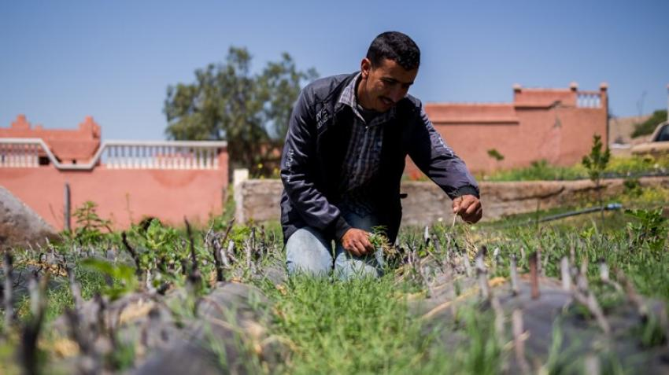

Plan Maroc Vert / « Green Morocco Plan »
stratégie nationale lancée en 2008 visant la modernisation et la résilience du secteur agricole (soutien aux filières, irrigation, valeur ajoutée). Description : transformation structurelle du secteur agricole vers plus de productivité et durabilité.
Agriculture voir le project

High Atlas Foundation (HAF)
projets d’agriculture durable et plantation d’arbres — ONG active dans la reforestation, agroforesterie, appui aux petites exploitations et nurseries locales. Description : plantations d’arbres fruitiers, formation des communautés rurales et nurseries locales (impact social et environnemental).
Agriculture voir le project